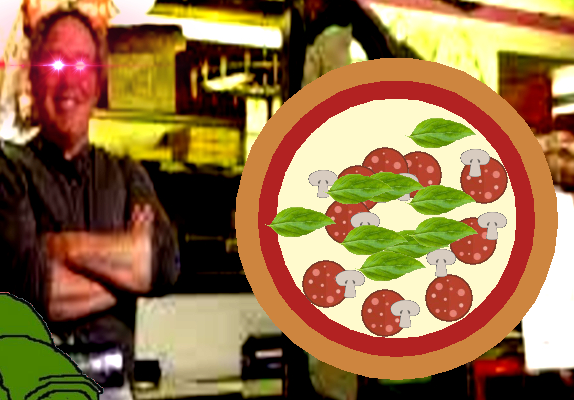
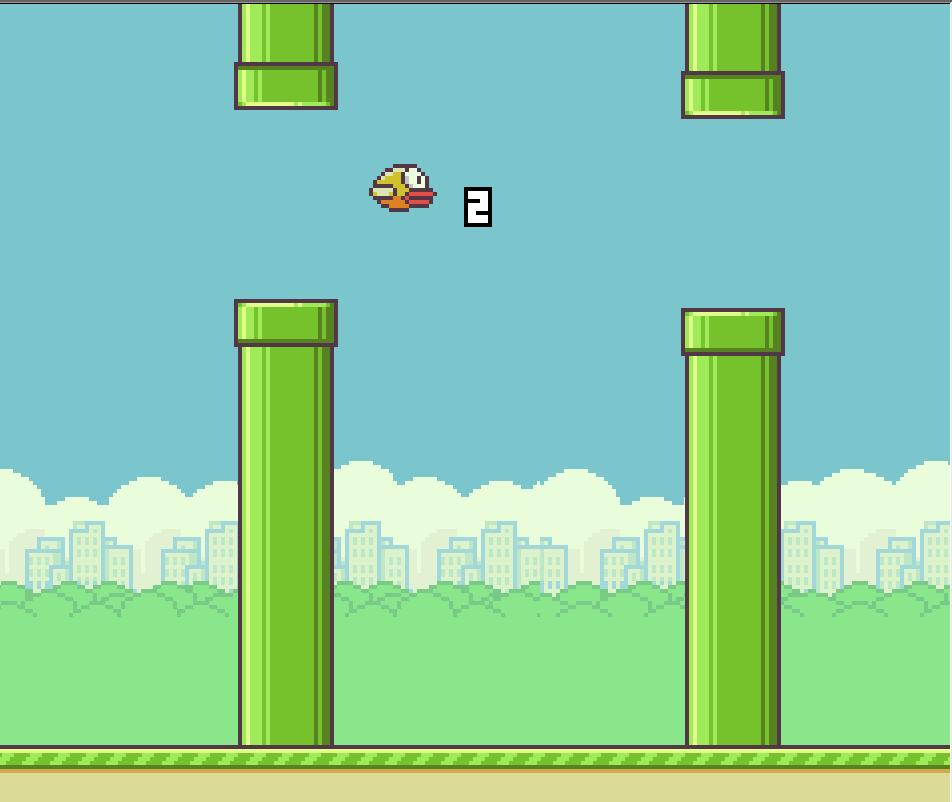

top text
>whats this<
Pizza Program 2.0
This project is a simulation of a customer’s experience at Pepe’s Pizzeria. The user can select size, crust thickness, sauce, topping options, and cooking time of their pizza through the console. We utilized Python’s background image options to make our program more realistic to the user as well as images to replicate the pizzeria experience.
Dinosaur Game

This is our take on the Google Chrome dinosaur game. Move the dinosaur around and jump with the arrow keys to dodge the obstacles and meteors, and try to survive until the obstacles become too fast. Aim for a high score on the leaderboards -- with name entry entirely within the game, not using the console.
Flappy Bird
I can't believe we made Flappy Bird in Project Lead The Way Unit 1 Lesson 3 Section 1
(This project is a recreation of the sensational mobile game "Flappy Bird". The goal is to make the bird jump through the gaps in the incoming pipes. This game is really hard btw)
The goal of this game is to collect the key and reach the door safely in each level. Use the arrow keys to move around and jump. You can wall jump if you are hugging a wall. Don't touch the spikes, lava, or guards.